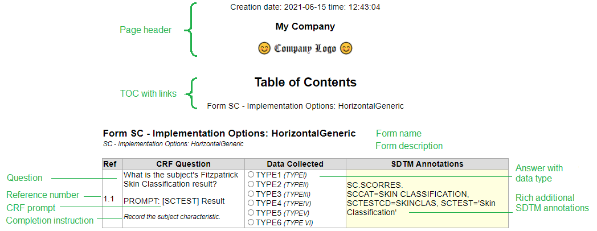

CRF Renditions
A short description of the CRF generated from the ODM-xml document.
CRF layout
The main feature of the CRF layout presented here is to put the SDTM annotations in a column adjacent to each question line. This way, the SDTM annotations are displayed at the proper location, but without the need to move boxes of annotations around inside and on top of CRF elements.

The CRF rendition consists of one table for each form in the CRF identified as FormDef tags.
- The 1st column is a sequence number constructed entirely form the OrderNumber attributes at different tags in the ODM-xml file. The number serves as a human reference when discussing and reviewing CRF content, as well as keeping track of the sorting of CRF elements.
- The 2nd column is the question from the CRF forms identified as Question/TranslatedText tags.
- The 3rd column is the answer to the question distinguised by DataType attributes. Each data type is displayed as a browser specific interpretation of an HTML tag of the corresponding type. As no indication of multiple selects exist in the ODM definition, this data type is extracted from the text itself.
- The 4th column is the SDTM annotation identified as @SDSVarName attributes. Additional information is added from Alias/@Name attributes having a @Context='SDTM' attribut as SDTM annotation marker. Each sentence in the SDTM annotation is presented on a line of its own for readability.
Design choises
All vendor specific name spaces and XML addendums to the ODM-XML file are ignored.
The following assumptions regarding the specifics of the ODM-XML file's XPATH's are in effect:
| CRF element |
XPath |
| Form Title/Name |
FormDef/Description/TranslatedText |
| Section Title/Name |
Not shown |
| Question Text |
ItemGroupDef/Description/TranslatedText |
| Prompt |
ItemDef/Alias[@Context="prompt"] |
| Completion Instructions |
ItemDef/Alias[@Context="completionInstructions"] |
| Implementation Notes |
ItemGroupDef/Alias[@Context="implementationNotes"]
ItemDef/Alias[@Context="implementationNotes"] |
| Mapping Instructions |
ItemGroupDef/@Domain + ItemDef/@SDSVarName + ItemDef/Alias[@Context='SDTM']/@Name |
| CDASH |
ItemDef/Alias[@Context="CDASH"] |
| SDTM |
ItemDef/Alias[@Context="SDTM"] |
Great inspiration as well as the CRF contens, is taken from the examples on the CDISC website. I have made very few design choises of my own. These do include a cleanup of the SDTM annotations, such as
- All text constants are enclosed in quotation marks
- Consistent use of single quotation marks in the SDTM annotations
- Ommision of table border for additions to the CRF itself
- Addition of a reference number for each CRF question. This has proved usefull when revieving CRFs
- Instructions/notes are written using a smaller font and in italics
Creating PDF documents
In all browsers, print the CRF renditions as PDF documents on your disk as either acrf or bcrf submission documents, respectively. Please note:
- The on-screen buttons are not included in PDF documents created by printing to a PDF file
- The TOC will work correctly as links within the PDF documents
- Form names in the visit matrix works as links as well
- All space delimited words in the SDTM annotations have link targets, reachable from define-xml, when CRF origins are created as named destinations of SDTM variables
- The yellow background color of the SDTM annotations requires printing of background graphics to be part of PDF documents
- Headers and footers, portrait versus landscape, and other document properties can be controlled within the printing dialog of your browser